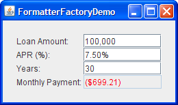

Formatted text fields provide a way for developers to specify the valid set of characters that can be typed in a text field. Specifically, theJFormattedTextFieldclass adds a formatter and an object value to the features inherited from theJTextFieldclass. The formatter translates the field's value into the text it displays, and the text into the field's value.Using the formatters that Swing provides, you can set up formatted text fields to type dates and numbers in localized formats. Another kind of formatter enables you to use a character mask to specify the set of characters that can be typed at each position in the field. For example, you can specify a mask for typing phone numbers in a particular format, such as (XX) X-XX-XX-XX-XX.
If the possible values of a formatted text field have an obvious order, use a spinner instead. A spinner uses a formatted text field by default, but adds two buttons that enable the user to choose a value in a sequence.
Another alternative or adjunct to using a formatted text field is installing an input verifier on the field. A component's input verifier is called when the component nearly loses the keyboard focus. The input verifier enables you to check whether the value of the component is valid and optionally change it or stop the focus from being transferred.
This GUI uses formatted text fields to display numbers in four different formats.
Try this:
- Click the Launch button to run FormattedTextFieldDemo using Java™ Web Start (download JDK 6). Alternatively, to compile and run the example yourself, consult the example index.
- Experiment with different loan amounts, annual percentage rates (APRs), and loan lengths.
Note that as long as the text you type is valid, the Month Payment field is updated when you press Enter or move the focus out of the field that you are editing.- Type invalid text such as "abcd" in the Loan Amount field and then press Enter.
The Month Payment field remains the same. When you move the focus from the Loan Amount field, the text reverts to the field's last valid value.- Type marginally valid text such as "2000abcd" in the Loan Amount field and press Enter.
The Monthly Payment field is updated, though the Loan Amount field still displays2000abcd. When you move the focus from the Loan Amount field, the text it displays is updated to a neatly formatted version of its value, for example, "2,000".. This code creates the first field.FormattedTextFieldDemo.javaamountField = new JFormattedTextField(amountFormat); amountField.setValue(new Double(amount)); amountField.setColumns(10); amountField.addPropertyChangeListener("value", this); ... amountFormat = NumberFormat.getNumberInstance();The constructor used to create the
amountFieldobject takes ajava.text.Formatargument. TheFormatobject is used by the field's formatter to translate the field's value to text and the text to the field's value.The remaining code sets up the
amountFieldobject. ThesetValuemethod sets the field's value property to a floating-point number represented as aDoubleobject. ThesetColumnsmethod, inherited from theJTextFieldclass, hints about the preferred size of the field. The call to theaddPropertyChangeListenermethod registers a listener for the value property of the field, so the program can update the Monthly Payment field whenever the user changes the loan amount.The rest of this section covers the following topics:
- Creating and Initializing Formatted Text Fields
- Setting and Getting the Field's Value
- Specifying Formats
- Using MaskFormatter
- Specifying Formatters and Using Formatter Factories
This section does not explain the API inherited from the
JTextFieldclass. That API is described in How to Use Text Fields.

Creating and Initializing Formatted Text Fields
The following code creates and initializes the remaining three fields in the
FormattedTextFieldDemoexample.rateField = new JFormattedTextField(percentFormat); rateField.setValue(new Double(rate)); rateField.setColumns(10); rateField.addPropertyChangeListener("value", this); numPeriodsField = new JFormattedTextField(); numPeriodsField.setValue(new Integer(numPeriods)); numPeriodsField.setColumns(10); numPeriodsField.addPropertyChangeListener("value", this); paymentField = new JFormattedTextField(paymentFormat); paymentField.setValue(new Double(payment)); paymentField.setColumns(10); paymentField.setEditable(false); paymentField.setForeground(Color.red); ... percentFormat = NumberFormat.getNumberInstance(); percentFormat.setMinimumFractionDigits(2); paymentFormat = NumberFormat.getCurrencyInstance();The code for setting up the
rateFieldobject is almost identical to the code listed previously for other fields. The only difference is that the format is slightly different, thanks to the codepercentFormat.setMinimumFractionDigits(2).The code that creates the
numPeriodsFieldobject does not explicitly set a format or formatter. Instead, it sets the value to anIntegerand enables the field to use the default formatter forIntegerobjects. The code did not do this in the previous two fields because the default formatter is not being used forDoubleobjects. The result was not what was needed. How to specify formats and formatters is covered later in this section.The payment field is different from the other fields because it is uneditable, uses a different color for its text, and does not have a property change listener. Otherwise, it is identical to the other fields. We could have chosen to use a text field or label instead. Whatever the component, we could still use the
paymentFormatmethod to parse the payment amount into the text to be displayed.
Setting and Getting the Field's Value
Keep the following in mind when using a formatted text field:
A formatted text field's text and its value are two different properties, and the value often lags behind the text.
The text property is defined by the
JTextFieldclass. This property always reflects what the field displays. The value property, defined by theJFormattedTextFieldclass, might not reflect the latest text displayed in the field. While the user is typing, the text property changes, but the value property does not change until the changes are committed.To be more precise, the value of a formatted text field can be set by using either the
setValuemethod or thecommitEditmethod. ThesetValuemethod sets the value to the specified argument. The argument can technically be anyObject, but the formatter needs to be able to convert it into a string. Otherwise, the text field does not display any substantive information.The
commitEditmethod sets the value to whatever object the formatter determines is represented by the field's text. ThecommitEditmethod is automatically called when either of the following happens:
- When the user presses Enter while the field has the focus.
- By default, when the field loses the focus, for example, when the user presses the Tab key to change the focus to another component. You can use the
setFocusLostBehaviormethod to specify a different outcome when the field loses the focus.
Note: Some formatters might update the value constantly, rendering the loss of focus meaningless, as the value is always the same as what the text specifies.When you set the value of a formatted text field, the field's text is updated to reflect the value. Exactly how the value is represented as text depends on the field's formatter.
Note that although the
JFormattedTextFieldclass inherits thesetTextmethod from theJTextFieldclass, you do not usually call thesetTextmethod on a formatted text field. If you do, the field's display changes accordingly but the value is not updated (unless the field's formatter updates it constantly).To obtain a formatted text field's current value, use the
getValuemethod. If necessary, you can ensure that the value reflects the text by calling thecommitEditmethod beforegetValue. Because thegetValuemethod returns anObject, you need to cast it to the type used for your field's value. For example:Date enteredDate = (Date)dateField.getValue();To detect changes in a formatted text field's value, you can register a property change listener on the formatted text field to listen for changes to the "value" property. The property change listener is taken from the
FormattedTextFieldDemoexample://The property change listener is registered on each //field using code like this: // someField.addPropertyChangeListener("value", this); /** Called when a field's "value" property changes. */ public void propertyChange(PropertyChangeEvent e) { Object source = e.getSource(); if (source == amountField) { amount = ((Number)amountField.getValue()).doubleValue(); } else if (source == rateField) { rate = ((Number)rateField.getValue()).doubleValue(); } else if (source == numPeriodsField) { numPeriods = ((Number)numPeriodsField.getValue()).intValue(); } double payment = computePayment(amount, rate, numPeriods); paymentField.setValue(new Double(payment)); }
Specifying Formats
TheFormatclass provides a way to format locale-sensitive information such as dates and numbers. Formatters that descend from theInternationalFormatterclass, such as theDateFormatterandNumberFormatterclasses, useFormatobjects to translate between the field's text and value. You can obtain aFormatobject by calling one of the factory methods in theDateFormatorNumberFormatclasses, or by using one of theSimpleDateFormatconstructors.
Note: A third commonly used formatter class,MaskFormatter, does not descend from theInternationalFormatterclass and does not use formats. TheMaskFormatteris discussed in Using MaskFormatter.You can customize certain format aspects when you create the
Formatobject, and others through a format-specific API. For example,DecimalFormatobjects, which inherit fromNumberFormatand are often returned by its factory methods, can be customized by using thesetMaximumFractionDigitsandsetNegativePrefixmethods. For information about usingFormatobjects, see the Formatting lesson of the Internationalization trail.The easiest way to associate a customized format with a formatted text field is to create the field by using the
JFormattedTextFieldconstructor that takes aFormatas an argument. You can see this association in the previous code examples that createamountFieldandrateFieldobjects.
Using MaskFormatter
TheMaskFormatterclass implements a formatter that specifies exactly which characters are valid in each position of the field's text. For example, the following code creates aMaskFormatterthat lets the user to type a five-digit zip code:You can try out the results of the preceding code by runningzipField = new JFormattedTextField( createFormatter("#####")); ... protected MaskFormatter createFormatter(String s) { MaskFormatter formatter = null; try { formatter = new MaskFormatter(s); } catch (java.text.ParseException exc) { System.err.println("formatter is bad: " + exc.getMessage()); System.exit(-1); } return formatter; }TextInputDemo. Click the Launch button to run TextInputDemo using Java™ Web Start (download JDK 6). Alternatively, to compile and run the example yourself, consult the example index.The program's GUI is displayed. The following table shows the characters that you can use in the formatting mask:
Character Description # Any valid number ( Character.isDigit).'
(single quote)Escape character, used to escape any of the special formatting characters. U Any character ( Character.isLetter). All lowercase letters are mapped to uppercase.L Any character ( Character.isLetter). All uppercase letters are mapped to lowercase.A Any character or number ( Character.isLetterorCharacter.isDigit).? Any character ( Character.isLetter).* Anything. H Any hex character (0-9, a-f or A-F).

Specifying Formatters and Using Formatter Factories
When specifying formatters, keep in mind that each formatter object can be used by at most one formatted text field at a time. Each field should have at least one formatter associated with it, of which exactly one is used at any time.You can specify the formatters to be used by a formatted text field in several ways:
- Use the
JFormattedTextFieldconstructor that takes aFormatargument.
A formatter for the field is automatically created that uses the specified format.
- Use the
JFormattedTextFieldconstructor that takes aJFormattedTextField.AbstractFormatterargument.
The specified formatter is used for the field.
- Set the value of a formatted text field that has no format, formatter, or formatter factory specified.
A formatter is assigned to the field by the default formatter factory, using the type of the field's value as a guide. If the value is aDate, the formatter is aDateFormatter. If the value is aNumber, the formatter is aNumberFormatter. Other types result in an instance ofDefaultFormatter.
- Make the formatted text field use a formatter factory that returns customized formatter objects.
This is the most flexible approach. It is useful when you want to associate more than one formatter with a field or add a new kind of formatter to be used for multiple fields. An example of the former use is a field that interprets the user typing in a certain way but displays the value (when the user is not typing) in another way. An example of the latter use is several fields with custom class values, for example,PhoneNumber. You can set up the fields to use a formatter factory that returns specialized formatters for phone numbers.You can set a field's formatter factory either by creating the field using a constructor that takes a formatter factory argument, or by calling the
setFormatterFactorymethod on the field. To create a formatter factory, you can often use an instance ofDefaultFormatterFactoryclass. ADefaultFormatterFactoryobject enables you to specify the formatters returned when a value is being edited, is not being edited, or has a null value.The following figures show an application based on the
FormattedTextFieldDemoexample that uses formatter factories to set multiple editors for the Loan Amount and APR fields. While the user is editing the Loan Amount, the $ character is not used so that the user is not forced to type it. Similarly, while the user is editing the APR field, the % character is not required.Click the Launch button to run FormatterFactoryDemo using Java™ Web Start (download JDK 6). Alternatively, to compile and run the example yourself, consult the example index.


The following code that creates the formatters and sets them up by using instances of the
DefaultFormatterFactoryclass:The boldface code highlights the calls toprivate double rate = .075; //7.5 % ... amountField = new JFormattedTextField( new DefaultFormatterFactory( new NumberFormatter(amountDisplayFormat), new NumberFormatter(amountDisplayFormat), new NumberFormatter(amountEditFormat))); ... NumberFormatter percentEditFormatter = new NumberFormatter(percentEditFormat) { public String valueToString(Object o) throws ParseException { Number number = (Number)o; if (number != null) { double d = number.doubleValue() * 100.0; number = new Double(d); } return super.valueToString(number); } public Object stringToValue(String s) throws ParseException { Number number = (Number)super.stringToValue(s); if (number != null) { double d = number.doubleValue() / 100.0; number = new Double(d); } return number; } }; rateField = new JFormattedTextField( new DefaultFormatterFactory( new NumberFormatter(percentDisplayFormat), new NumberFormatter(percentDisplayFormat), percentEditFormatter)); ... amountDisplayFormat = NumberFormat.getCurrencyInstance(); amountDisplayFormat.setMinimumFractionDigits(0); amountEditFormat = NumberFormat.getNumberInstance(); percentDisplayFormat = NumberFormat.getPercentInstance(); percentDisplayFormat.setMinimumFractionDigits(2); percentEditFormat = NumberFormat.getNumberInstance(); percentEditFormat.setMinimumFractionDigits(2);DefaultFormatterFactoryconstructors. The first argument to the constructor specifies the default formatter to use for the formatted text field. The second argument specifies the display formatter, which is used when the field does not have the focus. The third argument specifies the edit formatter, which is used when the field has the focus. The code does not use a fourth argument, but if it did, the fourth argument would specify the null formatter, which is used when the field's value is null. Because no null formatter is specified, the default formatter is used when the value is null.The code customizes the formatter that uses
percentEditFormatby creating a subclass of theNumberFormatterclass. This subclass overrides thevalueToStringandstringToValuemethods ofNumberFormatterso that they convert the displayed number to the value actually used in calculations, and convert the value to a number. Specifically, the displayed number is 100 times the actual value. The reason is that the percent format used by the display formatter automatically displays the text as 100 times the value, so the corresponding editor formatter must display the text at the same value. TheFormattedTextFieldDemoexample does not need to take care of this conversion because this demo uses only one format for both display and editing.You can find the code for the entire program in
.FormatterFactoryDemo.java
Formatted Text Field API
The following tables list some of the commonly used APIs for using formatted text fields.
Classes Related to Formatted Text Fields Class or Interface Purpose JFormattedTextField Subclass of JTextFieldthat supports formatting arbitrary values.JFormattedTextField.AbstractFormatter The superclass of all formatters for JFormattedTextField. A formatter enforces editing policies and navigation policies, handles string-to-object conversions, and manipulates theJFormattedTextFieldas necessary to enforce the desired policy.JFormattedTextField.AbstractFormatterFactory The superclass of all formatter factories. Each JFormattedTextFielduses a formatter factory to obtain the formatter that best corresponds to the text field's state.DefaultFormatterFactory The formatter factory normally used. Provides formatters based on details such as the passed-in parameters and focus state. DefaultFormatter Subclass of JFormattedTextField.AbstractFormatterthat formats arbitrary objects by using thetoStringmethod.MaskFormatter Subclass of DefaultFormatterthat formats and edits strings using a specified character mask. (For example, seven-digit phone numbers can be specified by using "###-####".)InternationalFormatter Subclass of DefaultFormatterthat uses an instance ofjava.text.Formatto handle conversion to and from aString.NumberFormatter Subclass of InternationalFormatterthat supports number formats by using an instance ofNumberFormat.DateFormatter Subclass of InternationalFormatterthat supports date formats by using an instance ofDateFormat.
JFormattedTextField Methods Method or Constructor Purpose JFormattedTextField()
JFormattedTextField(Object)
JFormattedTextField(Format)
JFormattedTextField(AbstractFormatter)
JFormattedTextField(AbstractFormatterFactory)
JFormattedTextField(AbstractFormatterFactory, Object)Creates a new formatted text field. The Objectargument, if present, specifies the initial value of the field and causes an appropriate formatter factory to be created. TheFormatorAbstractFormatterargument specifies the format or formatter to be used for the field, and causes an appropriate formatter factory to be created. TheAbstractFormatterFactoryargument specifies the formatter factory to be used, which determines which formatters are used for the field.void setValue(Object)
Object getValue()Sets or obtains the value of the formatted text field. You must cast the return type based on how the JFormattedTextFieldhas been configured. If the formatter has not been set yet, callingsetValuesets the formatter to one returned by the field's formatter factory.void setFormatterFactory(AbstractFormatterFactory) Sets the object that determines the formatters used for the formatted text field. The object is often an instance of the DefaultFormatterFactoryclass.AbstractFormatter getFormatter() Obtains the formatter of the formatted text field. The formatter is often an instance of the DefaultFormatterclass.void setFocusLostBehavior(int) Specifies the outcome of a field losing the focus. Possible values are defined in JFormattedTextFieldasCOMMIT_OR_REVERT(the default),COMMIT(commit if valid, otherwise leave everything the same),PERSIST(do nothing), andREVERT(change the text to reflect the value).void commitEdit() Sets the value to the object represented by the field's text, as determined by the field's formatter. If the text is invalid, the value remains the same and a ParseExceptionis thrown.boolean isEditValid() Returns true if the formatter considers the current text to be valid, as determined by the field's formatter.
DefaultFormatter Options Method Purpose void setCommitsOnValidEdit(boolean)
boolean getCommitsOnValidEdit()Sets or obtains values when edits are pushed back to the JFormattedTextField. Iftrue,commitEditis called after every valid edit. This property isfalseby default.void setOverwriteMode(boolean)
boolean getOverwriteMode()Sets or obtains the behavior when inserting characters. If true, new characters overwrite existing characters in the model as they are inserted. The default value of this property istrueinDefaultFormatter(and thus inMaskFormatter) andfalseinInternationalFormatter(and thus inDateFormatterandNumberFormatter).void setAllowsInvalid(boolean)
boolean getAllowsInvalid()Sets or interprets whether the value being edited is allowed to be invalid for a length of time. It is often convenient to enable the user to type invalid values until the commitEditmethod is attempted.DefaultFormatterinitializes this property totrue. Of the standard Swing formatters, onlyMaskFormattersets this property tofalse.
Examples That Use Formatted Text Fields
This table lists examples that use formatted text fields and points to where those examples are described.
Example Where Described Notes FormattedTextFieldDemo This section Uses four formatted text fields. SpinnerDemo How to Use Spinners Customizes the appearance of the formatted text fields used by two spinners. SliderDemo3 How to Use Sliders Pairs a formatted text field with a slider to enable an integer value to be edited. Converter Using Models Each ConversionPanelpairs a formatted text field with a slider.TextInputDemo This section Shows how to use text fields, spinners, and formatted text fields together, and demonstrates how to use MaskFormatter. Includes code for selecting the text of the field that has just received the focus.FormatterFactoryDemo This section A variation on FormattedTextFieldDemo that uses formatter factories to specify multiple formatters for two formatted text fields. RegexFormatter Regular Expression Based AbstractFormatter (in The Swing Connection A regular expression formatter that includes source code and information about how it was implemented.